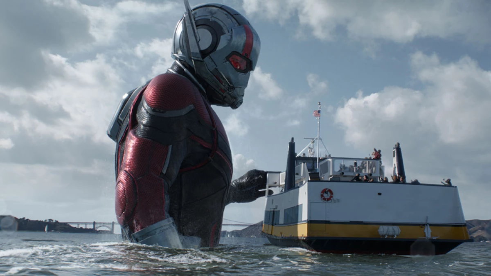

Avengers-Endgame
Endgame el juego final terminará unos días después de Infinity War. Iron Man y Nebula flotan en el espacio, mientras que los Vengadores que quedan en la Tierra intentan medir el daño que han hecho las gemas y encontrar una manera de revertir su curso. Cuando todo parecía perdido, el equipo se reunió gracias al Capitán Marvel, quien ayudó a la cometa a regresar a la Tierra. Una vez reunidos, los Vengadores tardarán cinco años en encontrar una nueva oportunidad para recuperar a todos los desaparecidos a raíz de la sorpresa de Thanos. Ant-Man logra, por casualidad, regresar del mundo cuántico con la clave: viajar en el tiempo..
Una escena post-créditos relativa
Además de observar los nombres de las miles de personas que dieron vida a la película, el último momento de los créditos muestra el sonido de Tony Stark haciendo sonar su martillo en un yunque, como se muestra en la primera película de Iron Man, que sirve como un recordatorio de comienzos de la franquicia..
5 PERSONAJES PRINCIPALES DE LA PELÍCULA ENDGAME
1-Iron man
Líder y benefactor de los Avengers, es un genio multimillonario, playboy y filántropo con una armadura mecánica que él mismo ha inventado.
Sus habilidades suelen ser la fuerza sobrehumana, poder volar y blindarse...

2-Viuda negra
Una espía altamente entrenada, miembro de la facción de Rogers y antigua agente del SHIELD.
Sus habilidades suelen ser artista marcial maestra (karate, judo, aikido, savate, boxeo y múltiples estilos de kung fu), y acrobata experta (gimnasta, acróbata y aérea capaz de numerosas maniobras complejas y hazañas.)...

3-Capitán América
Un superhéroe fugitivo y el líder de una de las dos facciones de los Avengers. Veterano de la Segunda Guerra Mundial , fue modificado con un suero experimental para que mejorara sus habilidades físicas; y después por accidente quedó congelado hasta que pudo despertarse en el mundo moderno.
Sus habilidades suelen ser la fuerza sobrehumana, la resisténcia sobrehumana y la velocidad sobrehumana...

4-Ant-man
Un antiguo criminal que consiguió un traje que le permite hacerse mayor o pequeño, e incrementar su fuerza.
Sus habilidades suelen ser tener capacidad de reducir el tamaño al microscopio e ingresar a universos subatómicos, intelecto de nivel de genio, cambio de tamaño desde casi microscópico hasta 100 pies gigantescos...
5-Thor
Miembro de los Avengers y rey de Asgard, basado en el personaje de la mitología nórdica del mismo nombre. Thor utiliza ahora una hacha mística conocida como Stormbreaker
Sus habilidades suelen ser la durabilidad y su capacidad para mantener los encantamientos de Odin...